Interface & service concept
REMEMBERY
Everyday help and family contact for people living with dementia.
A mobile interface concept for people living with Alzheimer’s disease, with separate views for family members and care professionals.

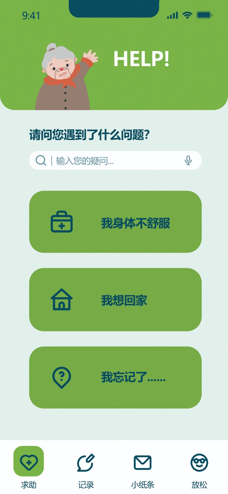
Start with what you need.

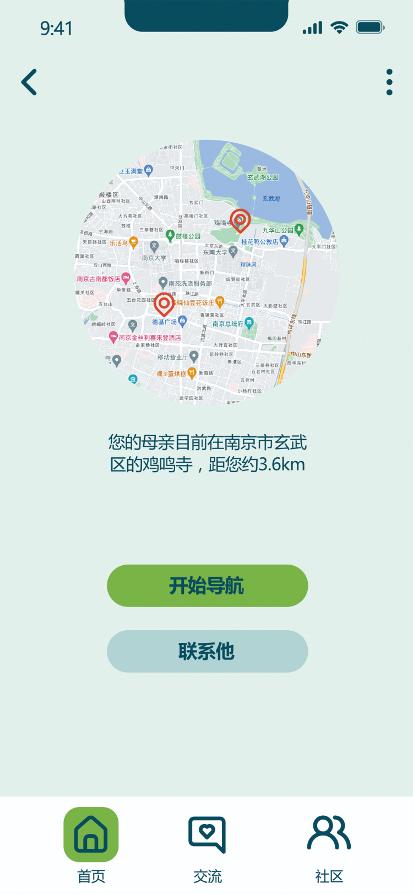
Find a way to help.
Original prototype screens. Chinese interface; English annotations.
- Work shown
- Interface design, task flows & Figma prototype
- Designed perspectives
- Person, family, doctor & social worker
- Project status
- Design concept. Not clinically evaluated.
The design intention: start with an everyday need, not a list of services. “I want to go home” becomes an entry point to travel options and family contact. The supporting views then show different information for each role.
One everyday task:
“I want to go home.”
The prototype groups help around three requests: feeling unwell, going home and forgetting something. This sequence follows the walking route, with a family-notification action before leaving and on arrival.
Name the need
Choose “I want to go home” from the help screen.
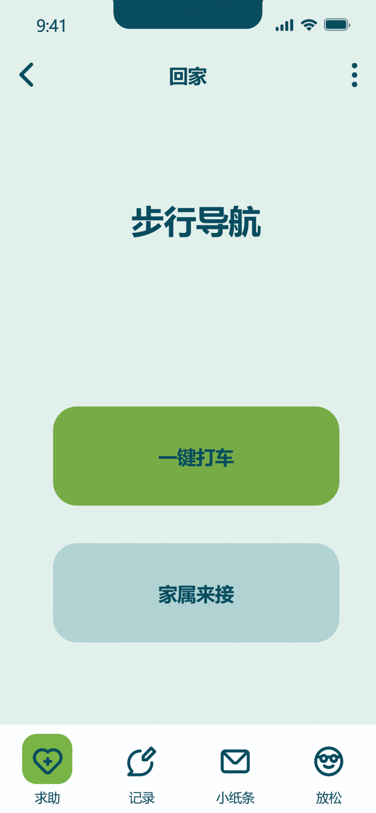
Choose a way home
Walking, a taxi or family pickup appear together as alternatives.
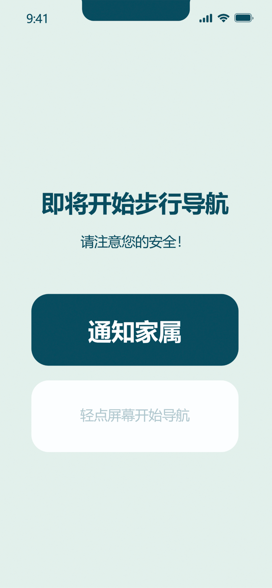
Let family know
The walking route offers a family notification before navigation starts.
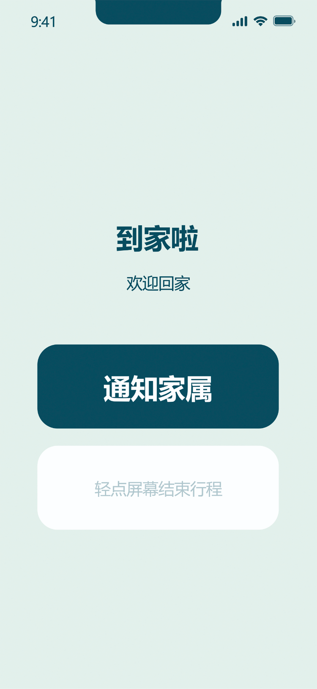
Close the loop
An arrival screen offers another opportunity to notify family.


These are designed interface states, not evidence of a live navigation, transport or emergency-response service. Select any screen to enlarge it.
Watch the prototype
A short edit of the original prototype recording: the way-home sequence, a separate family view, and a request to access a private record.
Three moments in the prototype
The excerpts show separate interface flows, not a synchronised connection between devices.
- Going home
Select the homeward journey, notify family, follow the illustrated navigation, then reach the arrival state.
- The family perspective
From the family overview, open a location view with navigation and contact options.
- Requesting access
A private record prompts an access request. The interface shows a waiting state before the next screen.
Watch the full original recording (5 minutes, original audio)
Choose who can view a personal record
The concept pairs personal records with access requests. A photo entry includes a permission-setting action; a family member encounters a request prompt when a record is private.
- A choice on the author’s side“Set permissions” appears alongside the entry before it is saved.
- A boundary on the viewer’s sideThe prompt says the owner has restricted access, with options to return or apply.
- A design question still openThe screens do not establish how consent, withdrawal or changes in decision-making capacity would work in practice.

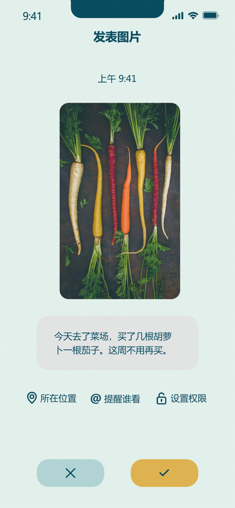
Permission setting before saving.

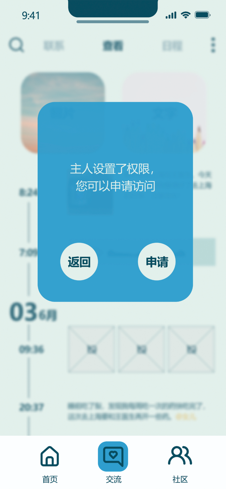
Request access instead of assuming it.
Screens for each support role
The wider concept includes family, clinical and community support. The original designs give these roles different starting points, rather than exposing the same dashboard to everyone.
- The person
- Everyday help, familiar contacts, personal records and moments of relaxation.
- Family
- Location and contact views, reminders, requests to view records and a discussion community.
- Doctor
- An appointment overview and conversations with people and family members.
- Social worker
- A work list, linked family contacts and a location-access request flow.

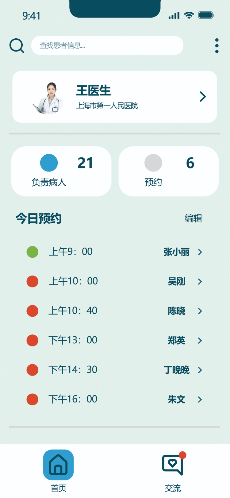
Appointments and conversations.

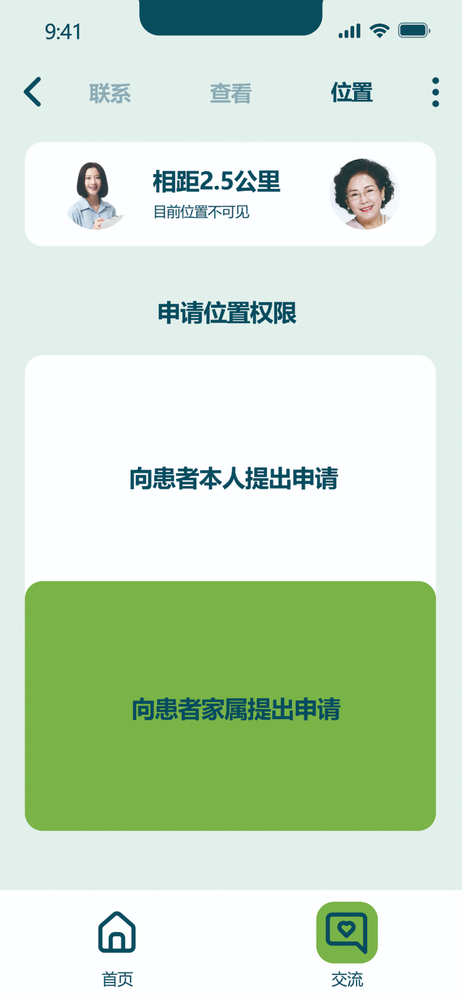
Request location access.
Role-specific screens express the service concept. Clinical workflows, secure data sharing and service integration are not demonstrated by the prototype.
Behind the interface
The design boards map the personal and family journeys, then develop the navigation through wireframes and detailed screens.

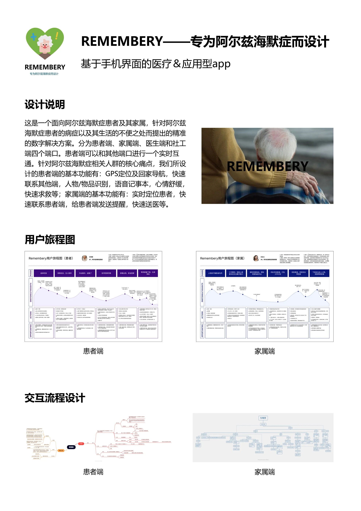
Journeys & interaction structure
Personal and family perspectives were mapped separately before being brought into the service concept.
Open design board
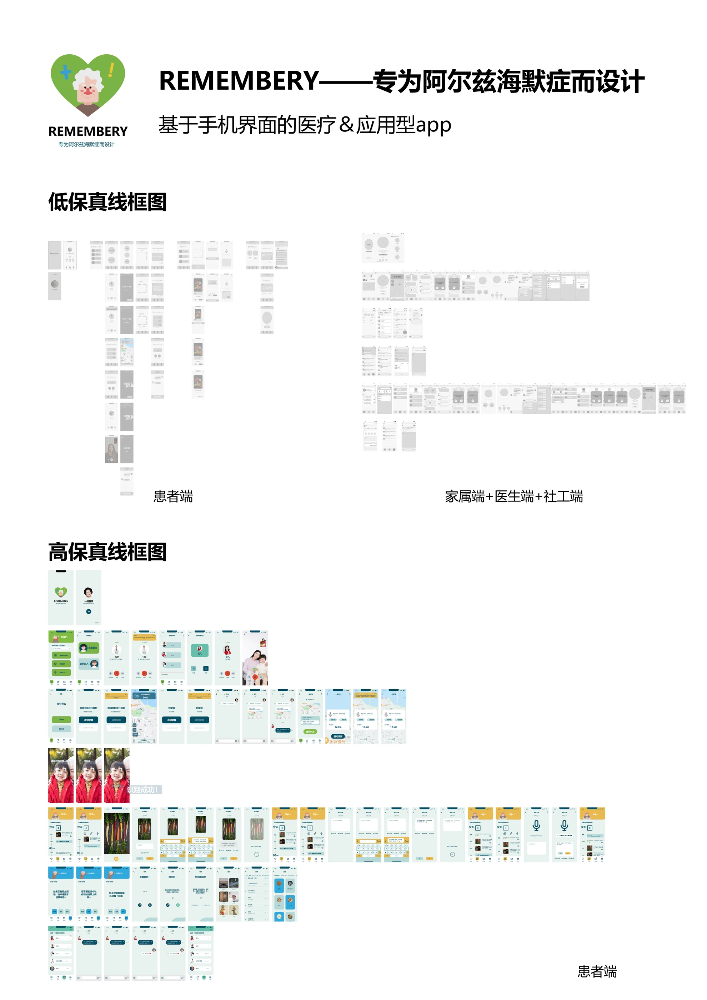
From structure to screens
The wireframe and screen overview shows the breadth of the proposed navigation and feature set.
Open design boardWhat I would test
before taking it further
Further work needs testing with people living with dementia and their supporters.
- Finding the next action. Evaluate the wording, visual contrast, target sizes and number of choices with people living with dementia and their support network.
- Support without unnecessary access. Examine who can request information, how permission is understood, and how it can be changed or withdrawn.
- When help does not arrive. Work through missed notifications, unavailable contacts and interrupted navigation before considering real-world use.
This project is an interface and service concept. It has not been clinically evaluated, and no claim of improved care outcomes is made.